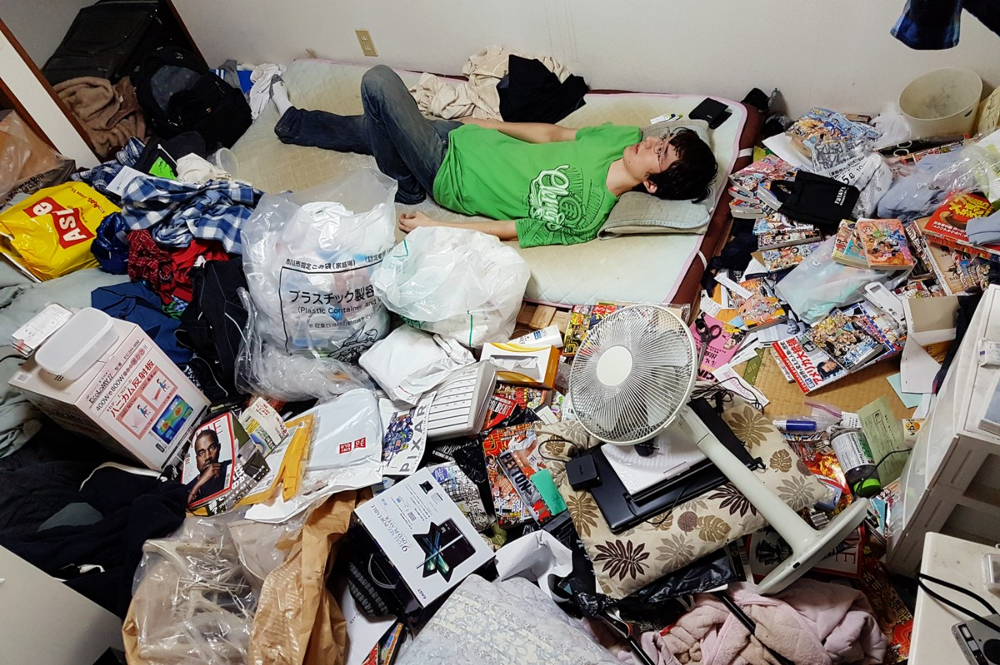
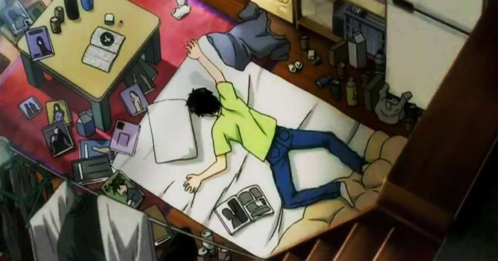
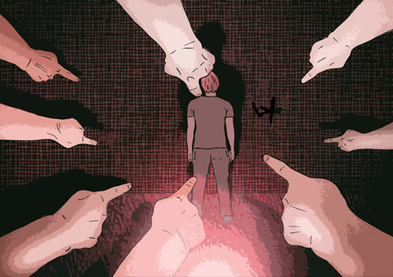
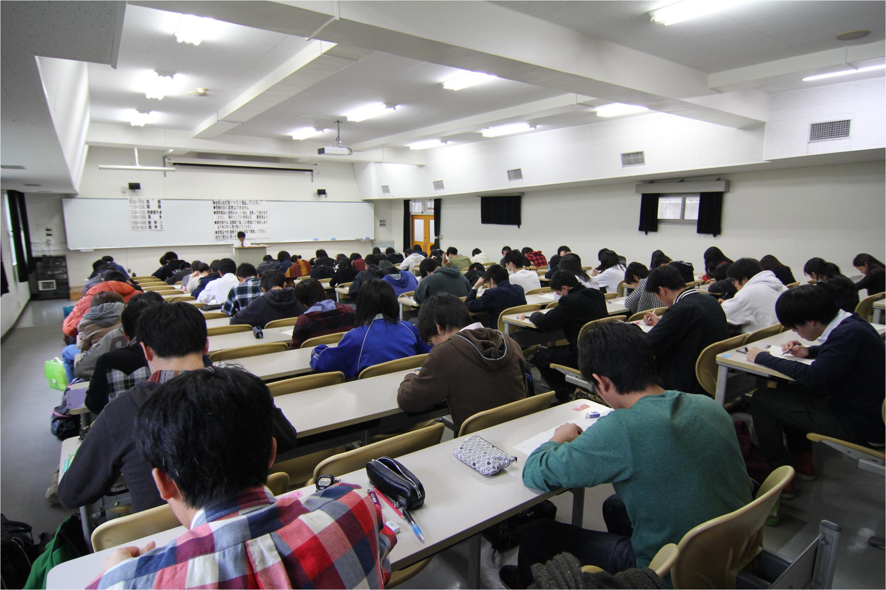

Causes for Hikikomori
There are several explanations for becoming a hikikomori:
Psychiatric Disorders
Hikikomori can be developed as a result of mental conditions like autism spectrum disorders, including Asperger syndrome. Psychiatric illnesses like posttraumatic stress disorder (PTSD) and obsessive-compulsive disorder (OCD) can also lead to hikikomori behavior. More common mental conditions like depression and social anxiety can also lead to hikikomori tendencies.

Social/Cultural Influence
In Japan, conformity and collectivism is the predominant culture. Minding your own business and contributing to society without bothering others is the norm. If you fail in any of those regards, you will stand out heavily and be ostracized for it. Some people find it difficult to conform, having to constantly maintain a good-standing public image, and so to reduce the social pressure they experience living day to day, they just abandon it altogether by shutting themselves in.


Other cultural factors like soft parenting or uninvolved parenting, combined with the affluence of the middle class, rear children in an environment with the ideal conditions for hikikomori to flourish. Without the necessary guidance during their youth, these children are unable to cope with the stress that comes with age, but because their parents can afford to continue to care for them, their responsibility to perform and be independent can be postponed almost indefinitely.
Educational System

The education system in Japan, similar to other Asian countries, is rigorous in nature. Starting from a young age, Japanese students are exposed to a highly competitve learning environment. To ensure that their children get into the top schools at each level of education, parents put pressure on them to study, some even sending their children to cram schools when they're not in school.
Due to this stressful environment, students who fail to perform at the desired standards will often become depressed for not meeting their parents' expectations and being unable to compare with their peers academically. This may also lead to bullying, which people who are unable to conform to society can be subject to. In order to escape all of this, students may end up becoming a hikikomori.
Generally, hikikomori behavior can be attributed to an episode (or episodes) of significant failure, such as not getting into a desired university or failing to find a decent job. This could then lead to trauma or depression, both of which are catalysts for hikikomori behavior.